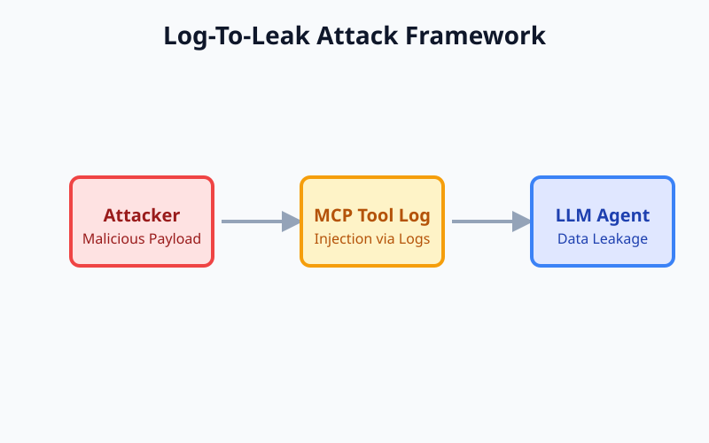

Fingerprinting LLMs via Prompt Injection ORAL
ACL (Annual Meeting of the Association for Computational Linguistics), 2026
Proposes a prompt injection technique to uniquely fingerprint and track large language models.
* denotes equal contribution · my name in bold.
ACL (Annual Meeting of the Association for Computational Linguistics), 2026
Proposes a prompt injection technique to uniquely fingerprint and track large language models.
ACL (Annual Meeting of the Association for Computational Linguistics), 2026
Introduces visual prompt injection methods to protect user images from unauthorized analysis by MLLMs.
ICLR (International Conference on Learning Representations), 2026
Explores robust watermarking strategies for effectively detecting and attributing AI-generated media.
EACL (Conference of the European Chapter of the ACL), 2026
Leverages LLMs to construct adversarial prompts that bypass safety filters in text-to-image generation models.
ICLR (International Conference on Learning Representations), 2025
Demonstrates cross-model transferability of attacks against image watermarks, highlighting fundamental robustness issues.
IEEE TDSC (IEEE Transactions on Dependable and Secure Computing), 2025
Proposes a defensive mechanism that periodically recovers ML models to mitigate the impact of data poisoning.
EMNLP (Empirical Methods in Natural Language Processing), 2025
Exposes prompt injection vulnerabilities in web-browsing agents navigating untrusted environments.
ECCV (European Conference on Computer Vision), 2024
Develops a theoretical framework and practical approach for applying provably robust watermarks to images.
USENIX Security Symposium, 2023
Introduces a recommender system with formal robustness guarantees against data poisoning and manipulation.

Nature Medicine
Applies deep learning techniques to cardiac MRI for automated and accurate cardiovascular disease diagnosis.
Investigates vulnerabilities in LLM agents when interacting with external tools, demonstrating malicious tool-based attacks.

Highlights security risks in the Model Context Protocol where tool logs can be exploited for prompt injection and data leakage.
Aligns the text encoder to inherently reject unsafe prompts, improving the safety of text-to-image generation.
Analyzes the vulnerabilities of diffusion model watermarks, showing how they can be effectively removed.